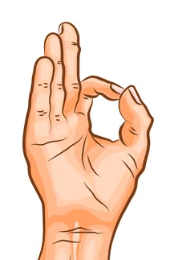
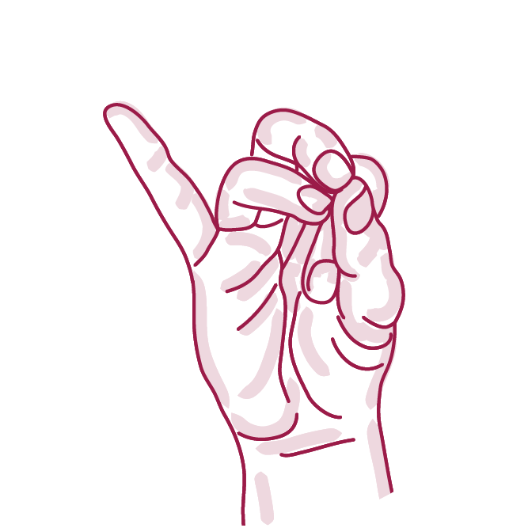
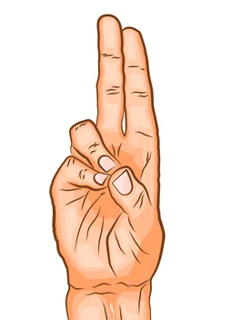
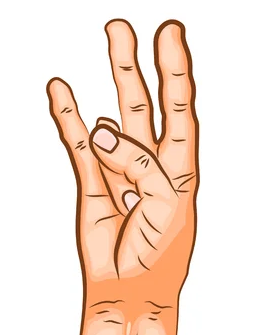
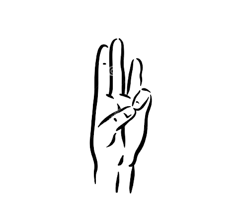

E - Instructor is developed with the purpose of assisting users in learning and practicing sun salutations as well as
few other warm up postures.
Benefits of using this application are:
Instructor independent learning.
Learn to perform the perfect yoga postures and mudras
Postures and Benefits
1
Pranamasana (Prayer pose)
It helps to relax the nervous system
and maintain the balance of your body.
2
Hastauttanasana (Raised arms pose)
The objective of doing this asana is to
expand the whole body from heels to the tip of the
fingers.
3
Hastapadasana (Standing forward bend)
It makes the waist and spine flexible.
4
Ashwa Sanchalanasana (Equestrian pose)
It makes the spine and neck flexible
and strengthens the leg muscles.
It also helps in indigestion and constipation.
5
Adho Mukha Svanasana (Downward facing dog pose)
It stretches the arms, chest, shoulder,
and spine, improves posture and calms the mind.
6
Ashtanga Namaskara (Salute with eight parts or points)
It increases the flexibility of the back
and spine. Strengthen the back muscles
and reduces stress and anxiety.
7
Bhujangasana (Cobra pose)
It stretches the shoulders, chest and
back, increases flexibility and elevates mood.
8
Adho Mukha Svanasana (Downward facing dog pose)
It increases the blood flow to the spinal region
and strengthens the muscles of the arms and
legs.
9
Ashwa Sanchalanasana (Equestrian pose)
It brings flexibility to leg muscles
and tones the abdominal organs.
10
Hastapadasana (Standing forward bend)
It Stretches the hamstrings and opens the hips, shoulders and arms.
11
Hastauttanasana (Raised arms pose)
It expands the chest which results in a full
intake of oxygen where lung capacity is fully
utilized.
12
Pranamasana (Prayer pose)
It strengthens thighs, knees, and ankles and improves posture.
Benefits of Yoga Mudras
1
Gyana Mudra

▪ Transcends ego, calms the mind, promotes wisdom
▪ Stimulates brain and pituitary gland, improves memory and sleep
▪ Relieves mental pressures, migraine, controls high BP
▪ Changes negative to positive emotions, helps overcome addictions
2
Apana vayu mudra

▪ Corrects imbalances in the five elements fire, air, ether, earth and water
▪ Relieves cardiac problems and prevents heart attack
▪ Relieves flatulence, acidity, gastritis, migraine, joint pain
▪ Removes impurities in blood, improves circulation
3
Prana Mudra

▪ Improves circulation, reduces fatigue and refreshes
▪ Boosts vitality, strength, improves stamina and immunity
▪ Relieves eye problems, improves vision
▪ Helps to recover fast from long term illness
4
Surya Mudra

▪ Raises inner heat, removes
lethargy, increases balance
▪ Relieves stress, common cold, reduces cholesterol
▪ Relieves diabetes, cholesterol and high blood pressure
▪ Improves digestion, overall strength and stability
5
Varuna Mudra

▪ Relieves kidney and prostate problems, incontinence, bed-wetting
▪ Improves fluid balance, moisturizes dry skin, helps psoriasis, eczema
▪ Relieves, burning eyes, dryness of the mouth, improves taste sensation